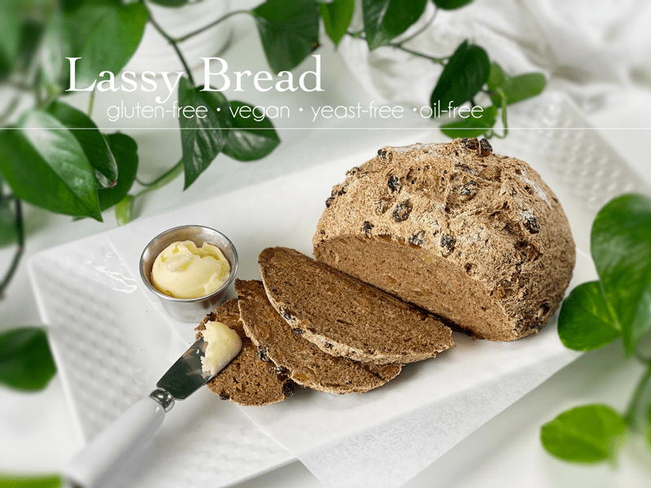
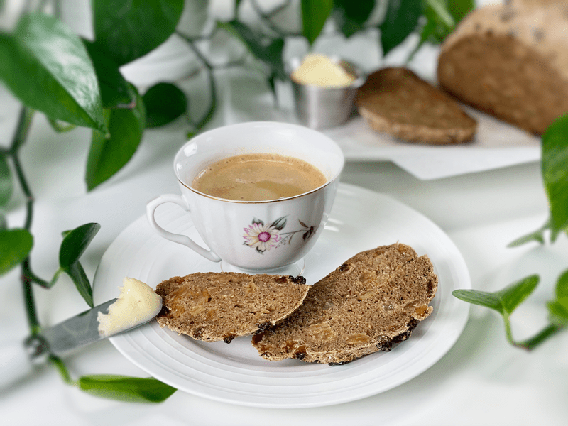
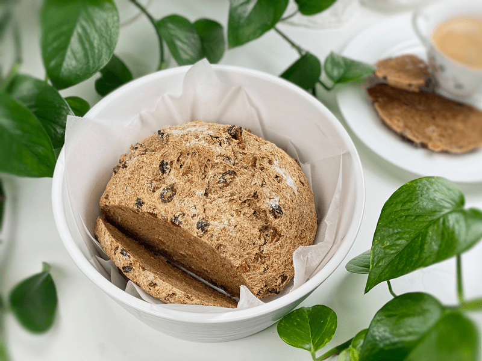
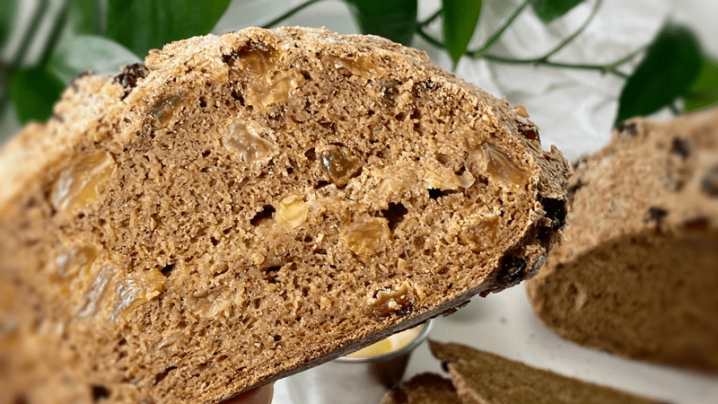
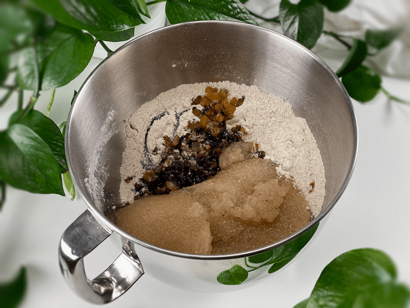
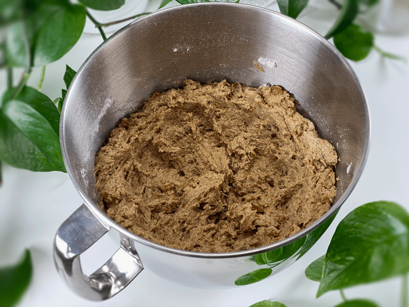
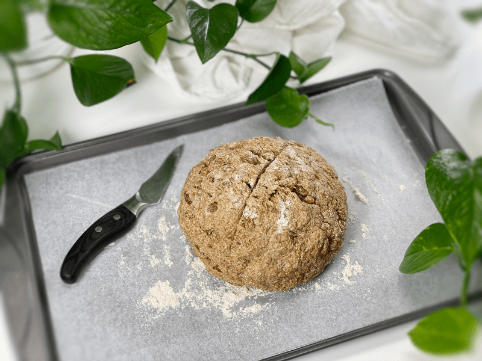
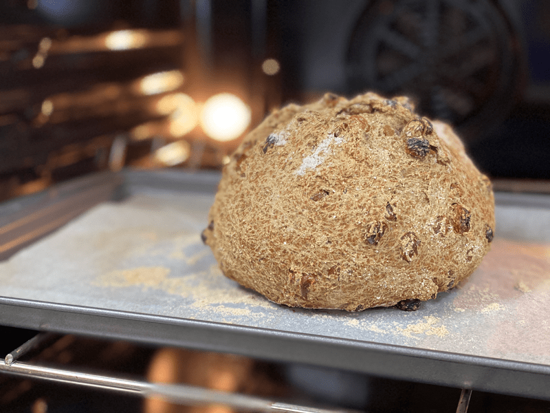
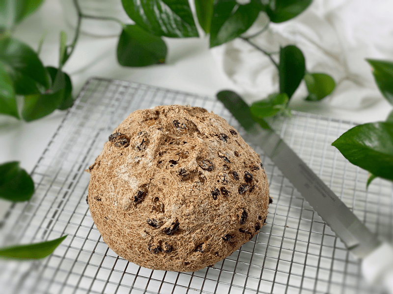
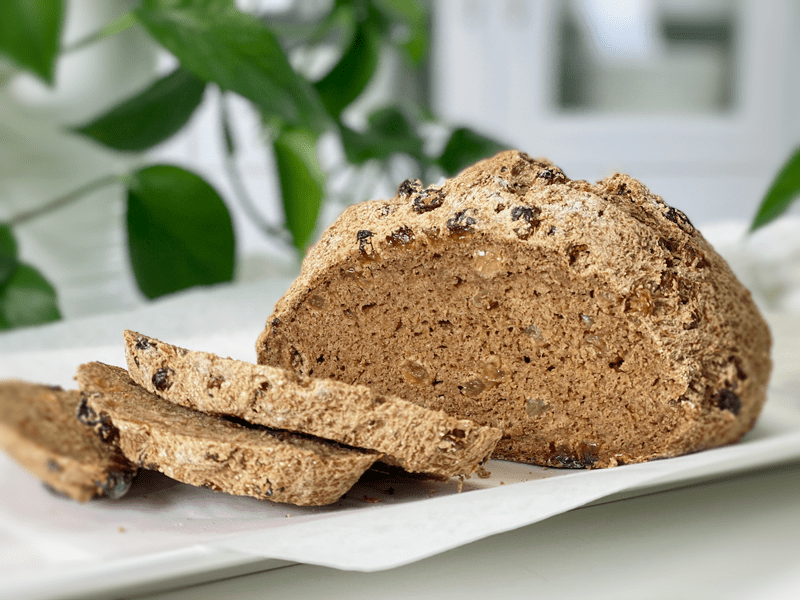

Lassy Raisin Bread | Gluten-Free | Vegan | Yeast-Free
Every culture has traditional foods, and Lassy Raisin Bread, also known as Molasses Sweet Bread, is a tradition of Newfoundland. It’s delicious fresh out of the oven, toasted or turned into French toast with a drizzle of molasses. Traditionally, it is made from white sugar, dry yeast, all-purpose flour, milk, molasses, melted butter, eggs, and raisins. Since I run a gluten-free, dairy-free home (and recipe site), I naturally had to turn to my tried-and-true ingredients to keep it in line with our dietary needs.

The inspiration for this bread was my Uncle Lonnie. He is the true vision of an Alaskan bushman. Rugged exterior, wild and crazy beard, a head of hair that never sees the light of day as it is always tucked under a hat, weathered skin that carries a lifetime of stories, quiet… too quiet, if you ask me, and when he does speak it is short, to the point, and often witty.
His hands are wrinkled, scattered with lines and sunspots (or stained with motor oil?), they are rough and strong, yet they can yield the most delicate touch when carving a life-sized bear on their wooden front door, or the most intricate knife he made for me that measures no taller than a nickel.
He always has a cigarette hanging from the corner of his mouth, the smoke causing him to cock his head to one side with one eye permanently squinted shut. He wears layers of shirts, most of which are tattered and flannel. His jeans are worn, the knees are thin with thread; you will never see Lonnie in a pair of slacks–that would be like a duck in a tuxedo. He has walked endless miles on expired boots that still have enough backbone to say up without any strings attached.

To honor Great Grandma, I served it with a hot cup of coffee in one of her tea cups.
That may be the exterior of my uncle, but the inside is a HUGE heart. He would do anything for anyone when it really boils down to it. He is a man of MANY talents and the end result of anything he touches is a testimony to that. When he married my aunt, they had only known each other for two weeks. I was three years old (their flower girl) and they are still married forty-six years later.
So as you can see, Uncle Lonnie is a pretty special character, and that is why when I learned that Lassy Raisin Bread was a childhood treat that my great-grandmother used to make for him — well, I just knew that I had to pop in the kitchen and try my hand at making such a bread.

Baking Is Different From Cooking
Many non-baking recipes have a little wiggle room for adjustments. A little more of this, less of that, or even sometimes leave an ingredient out altogether–they can be quite forgiving. But when it comes to baking, especially if you are new to it, it’s good to know how to measure out dry ingredients properly and stick to the recipe, at least the first time around. Here’s a good example…
A cup of flour scooped directly out of the bag or flour container and leveled with the back of a knife weighs considerably more (up to 30% more) than a cup of flour that was spooned into the cup and then leveled with the back of a knife. As you can imagine, this can greatly affect the outcome of the bread (typically drier). The proper technique is to spoon the flour into the cup until it is overflowing, then run the back of a knife across the top to level it. This will result in perfectly measured flour every time. Personally, I use a kitchen scale, which you can read about (here).

Ingredient Tidbits
I won’t go into detail about each ingredient used in this recipe, but if you want to learn more as to why I use them in my bread recipes, check out my Everyday Sandwich Bread recipe. However, I do wish to quickly go over two ingredients: molasses and golden raisins.
Molasses
- Since I added a hefty amount of raisins to the recipe, I reduced the amount of molasses that is usually called for. The raisins provide more than enough sweetness all on their own, and it doesn’t take much molasses for its flavor to shine through.
- There are different types of molasses, and they are not always interchangeable. Fancy molasses is typically used in baking, as it is lighter in color as well as sweeter. Blackstrap molasses is darker and has a slightly bitter, robust flavor. Since molasses is one of the dominant flavors in this type of bread, I steered away from the bitter version.
Golden Raisins
- Both golden and brown raisins are made from green Thompson Seedless grapes. The difference in color between golden raisins and regular raisins comes from the way they are dried. Brown ones are usually laid on paper and sun-dried for about three weeks, which causes browning. Golden raisins are not dried in the sun but in large dehydrators at controlled temperatures, with controlled humidity levels.
- Besides color, golden raisins taste a bit lighter and fruiter. Use whichever one you have on hand, but when you have a chance, I recommend trying the bread with the golden variety.
- Here’s a fun fact: Grapes start out as mostly water, around 78 percent. After being dried into raisins, the water content is about 15 percent. To make one pound of raisins requires about five pounds of grapes.
Bread Results
Of all the loaves of bread I have made, I almost feel like this one is my favorite, perhaps it is because it is tied to the wonderful memories of my great-grandma — regardless, it turned out simply amazing. Bob ate half a loaf in one day! He didn’t toast it or put any vegan butter on top, which he typically does. He ate it plain, one slice after another. The crust on this one was crunchy, chewy, and the perfect crumb. The interior texture was soft, slightly dense but not gummy, and the flavor … boy, there was something special about the fancy molasses and the use of golden raisins. I hope you enjoy this bread as much as we did. blessings, amie sue
 Ingredients
Ingredients
Psyllium Gel
Remaining Ingredients
- 1 cup (100 g) gluten-free rolled oats, ground
- 3/4 cup (100 g) sorghum flour
- 1/2 cup (100 g) raw hulled buckwheat, ground
- 1/4 cup (40 g) arrowroot powder
- 1 tsp (4 g) baking powder
- 1/2 tsp (3 g) baking soda
- 1 1/2 tsp (9 g) sea salt
- 1/4 cup (82 g) fancy molasses
- 1 1/2 cups (223 g) golden raisins
Preparation
Psyllium Gel
- Quickly whisk the water, psyllium husk, and vanilla in a mixing bowl. It will instantly start to gel, which is to be expected. Set aside while you prepare the remaining ingredients, so it can thicken.
- Preheat the oven to 350 degrees (F).
- Line a baking sheet with parchment paper, sprinkled with a little extra flour.
Dry Ingredients
- In the mixing bowl that we are going to knead the bread in, whisk together the oat flour, sorghum flour, buckwheat flour, arrowroot, baking soda, baking powder, and salt.
Mixing and Baking the Dough
- Add the psyllium gel, molasses, and raisins around the bowl.
- Using either a hand mixer or a free-standing mixer with dough attachments, knead for 5 minutes (set a timer on your phone) to ensure that it gets kneaded enough (don’t we all love feeling needed?).
- Start the mixer on low until the flour is folded in, then turn it up one speed. If you start off at too high a speed, the flour will jump out of the bowl.
- Shape the dough into a round or oblong shape and place it on the baking sheet.
- Score the top of the bread with the tip of a sharp knife, going no more than 1/4″ deep.
- Bake on the center rack for 50-60 minutes.
- Take the loaf out of the oven and turn it upside down. Give the bottom of the loaf a firm thump! with your thumb, like striking a drum. The bread will sound hollow when it’s done.
- When it’s done baking, slide it onto a cooling rack and wait to cut when cool.
Dutch Oven Method (if using)
- Place the empty Dutch oven and lid inside the oven and preheat the oven to 350 degrees (F).
- Once preheated and bread is ready to bake, remove the Dutch oven and place it on the stove. Be careful not to touch the Dutch oven or lid without oven mitts because it will be hot! Place the dough on a piece of parchment paper and transfer it into the HOT Dutch oven. Cover with the hot lid and bake for 50 minutes.
- Remove hot lid and bake another 10 minutes.
- Use the parchment paper to lift the bread out of the Dutch oven and cool on a wire rack until nearly room temperature before slicing.
Storage
- Once the bread has thoroughly cooled, you can wrap it. It should last up to roughly 5 days.
- Brown paper bag: This will better protect your loaf and allow for good air circulation, meaning that your crust won’t get soft. Some people claim that a sliced loaf stored cut-side down in a paper bag will stay the freshest.
- Plastic bag: If you want to avoid staling at all costs, go with a plastic bag. Make sure to get as much air out of there as possible before sealing. Your crust will soften, but your bread won’t dry out or harden prematurely. Make up for unwanted softness with toasting.
- Tea towel: Wrap the bread in a tea towel, then place it in the bread box.
- Fridge: Whether you store it in the fridge is up to you. Many people feel that bread in the fridge turns stale quicker. If you’re not going to finish a loaf in the first few days after baking it, you might want to freeze it until you’re ready to eat it.
- Freezing: Rather than freezing the loaf as a whole, slice it and place wax or parchment paper in between each slice before sliding it into a freezer-safe container. That way you can pull out 1,2, or as many slices as you want.
-

-
Ready for the mixture.
-

-
This is what the dough looks like after 5 minutes of kneading.
-

-
Ready for the oven. Don’t forget to SCORE the top of the bread!
-

-
Baked to perfection.
-

-
You are going to be tempted, but don’t cut it until it has cooled! Trust me.
-

-
Slice it thick or thin… it’s a lovely bread all on its own or toasted.
© AmieSue.com